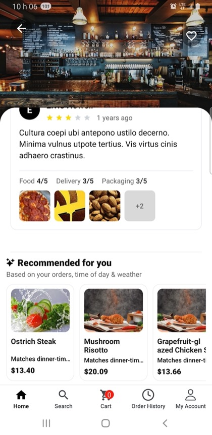
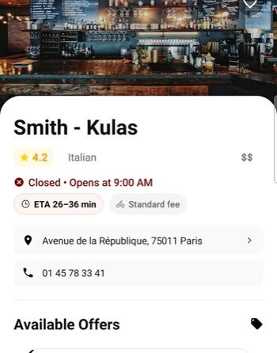
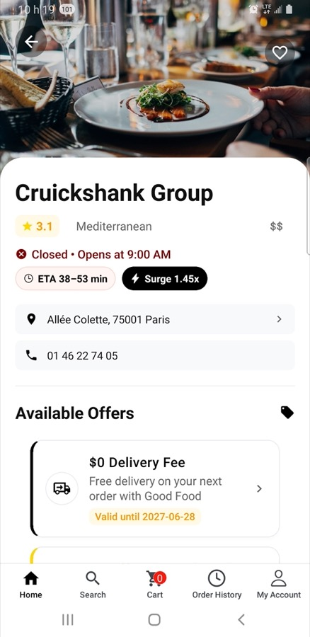

AI intelligence
Three customer-facing helpers: personalized recommendations, smarter arrival times, and delivery fees that can rise when demand spikes.
Recommendations that grow the basket
On restaurant and discovery surfaces, a Recommended for you block can suggest dishes that fit the customer’s history, time of day, and context such as weather. Each card shows a short reason line so the suggestion feels explained rather than random.
The goal is a natural add-to-cart moment (sides, drinks, extras) that raises average order value without forcing a separate upsell screen.
What the customer sees
A horizontal row of recommended items with title, price, and a short match reason. Tapping a card follows your normal product / add-to-cart path — same as browsing the menu, just smarter placement.

Arrival times customers can trust
Smart ETA estimates how long food will take, using kitchen load and travel time where your backend intelligence stack is enabled. On the restaurant page the estimate appears as its own chip (for example “ETA 26–36 min”).
Clearer arrivals reduce “where is my food?” support load and set expectations before the customer commits to checkout.
The ETA chip
Look for the pink/clock ETA chip on restaurant detail. That chip is only about time — open/closed status and the delivery-fee chip are separate cues on the same header.

Delivery fee when the city is busy
When demand is high and courier capacity is tight, the delivery-fee chip can show a surge multiplier (for example “Surge 1.45x”). Quiet periods keep a standard fee; peaks stay explicit so the customer understands the cost before paying.
Fee / surge is a marketplace lever for reliability — separate from the ETA chip, which only answers “how long?”.
The fee / surge chip
On restaurant detail, read the fee chip for what delivery costs now. Surge replaces the standard fee when your rules say demand is elevated; if you only see “Standard fee”, that hour is quiet.
